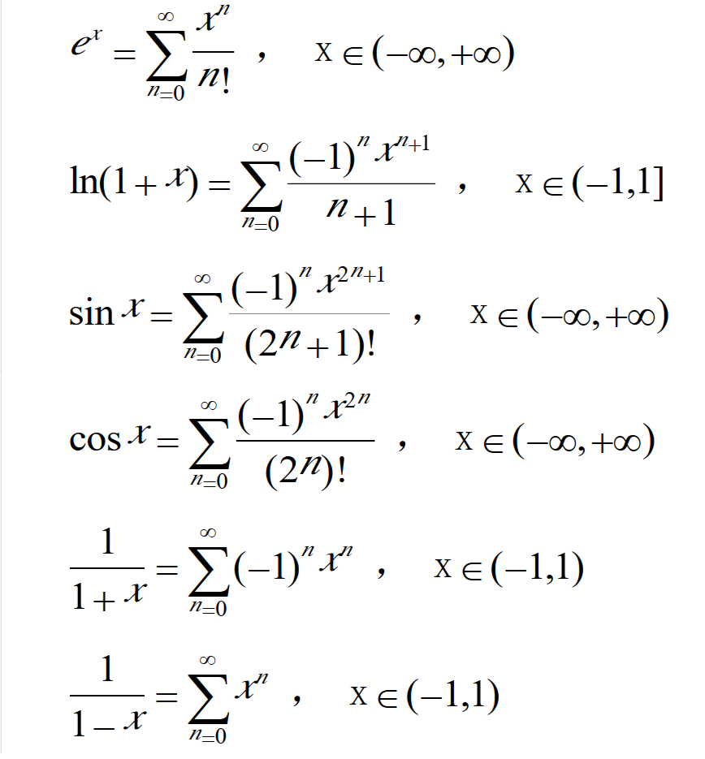

杂项
一些暂时不足以建立单独分类的内容。可能与所学课程有关。
理解傅里叶变换
最近通信原理课程让我想起一篇很久以前看到的教程，简单易懂。https://zhuanlan.zhihu.com/p/19763358
C中复杂声明
一篇解读C语言中复杂声明的博客。其实一般情况下看上去比较让人一头雾水的声明基本都是函数指针的声明。https://blog.csdn.net/hshl1214/article/details/5647591
VirutalBox6.0 安装 CentOS7 鼠标不显示问题
https://www.jianshu.com/p/16c03bfbef29 这篇文章可以解决问题。但是明显感觉鼠标移动卡顿且呈跳跃性移动。但是总比没有鼠标要强。
Oracle NUMBER类型
类型：NUMBER （ precision， scale）
- precision表示数字中的有效位;如果没有指定precision的话，Oracle将使用38作为精度。如果scale大于零，表示数字精确到小数点右边的位数；scale默认设置为0；如果scale小于零，Oracle将把该数字取舍到小数点左边的指定位数。
- Precision的取值范围为【1---38】；Scale的取值范围为【-84---127】。
例如NUMBER(38,3)中总位数是38，小数点后精确到3位，
参考网址 https://www.cnblogs.com/oumyye/p/4448656.html
Java
泛型不可以是原始类型（ int, char, double... ），需要在泛型中使用原始类型需要使用其包装类型。
| 基本类型 | 包装类 |
|---|---|
| boolean | Boolean |
| byte | Byte |
| short | Short |
| int | Integer |
| long | Long |
| float | Float |
| double | Double |
| char | Character |
Java Random类的nextInt(x)是前闭后开，即可能会返回0，但最大为x-1 。
安卓部分
Gradle 下载依赖不稳定、Gradle Sync project failed 解决方案
File - Settings ， 搜索 Remote Jar Repositories ， 点击右方 Add 按钮，将以下两个 URL 依次加入。
http://maven.oschina.net/content/groups/public/
http://maven.aliyun.com/nexus/content/groups/public
点击 OK 确认，下载速度就可以提高几个量级！感谢开源中国与阿里云的镜像服务！
活动生命周期
| 方法 | 何时调用 | 下一个方法 |
|---|---|---|
| onCreate() | 活动第一次创建时调用这个方法。用于正常的静态设置，如创建视图。它还可以传递一个Bundle，其中包含之前保存的活动状态。 | onStart() |
| onRestart() | 活动停止并再次启动之前会调用这个方法。 | onStart() |
| onStart() | 活动变得可见时调用这个方法。如果活动进入前台，接下来会调用onResume(),如果活动变得不可见，接下来会调用onStop()。 | onResume()或onStop() |
| onResume() | 活动在前台时调用这个方法。 | onPause() |
| onPause() | 由于另一个活动恢复运行而导致这个活动不再在前台时调用这个方法。在这个方法完成之前，不会恢复继续运行时下一个活动。所以这个方法中的所有代码需要很快地运行。如果活动返回到前台，接下来会调用onResume()方法，如果活动变得不可见，接下来会调用onStop()。 | onResume()或onStop() |
| onStop() | 活动不再可见时调用这个方法。这可能是因为拎一个活动把它盖住了，或者是因为这个活动被撤销，接下来会调用onRestart(),或者如果活动将被撤销，接下来将会调用onDestroy()。 | onRestart()或onDestroy() |
| onDestroy() | 活动将被撤销或者活动将要完成时会调用这个方法。 | 无 |
安卓网络编程
- 安卓主线程不能用Socket！
- 安卓只能用主线程更新视图！
- 安卓的服务如果直接使用Socket也会得到主线程不能使用Socket的异常！
- 直接使用Handler处理网络也会得到主线程不能使用Socket的异常！
安卓图标大小及更换
安卓图标位于src\main\res\下，有对应表格如下
| 文件夹 | 图标尺寸 |
|---|---|
| mipmap-mdpi | 48*48 |
| mipmap-hdpi | 72*72 |
| mipmap-xhdpi | 96*96 |
| mipmap-xxhdpi | 144*144 |
| mipmap-xxxhdpi | 192*192 |
安卓字符串中的and符号
遇到报错信息Unescaped & or nonterminated character/entity reference, &需要改写为&。
安卓自动填充服务
https://developer.android.google.cn/guide/topics/text/autofill-services
以下内容翻译自第二个网址。
要实现自动填充服务，必须声明并实现该服务。你的manifest文件中必须要有<service>元素，且该元素要包括以下属性。
android:name实现了AutofillService的子类.android:permission需要声明BIND_AUTOFILL_SERVICEintent-filter元素包括强制<action>赋值android.service.autofill.AutofillService
以下为示例代码
<service
android:name=".MyAutofillService"
android:label="My Autofill Service"
android:permission="android.permission.BIND_AUTOFILL_SERVICE">
<intent-filter>
<action android:name="android.service.autofill.AutofillService" />
</intent-filter>
<meta-data
android:name="android.autofill"
android:resource="@xml/service_configuration" />
</service>
$$x=y^2$$
Some notes
PHP
PHP int overflow: 如果给定的一个数超出了 integer 的范围，将会被解释为 float。同样如果执行的运算结果超出了 integer 范围，也会返回 float。
PHP float to int:向下取整。
PHP 7.0.0 起，NaN 和 Infinity 在转换成 integer 时，不再是 undefined 或者依赖于平台，而是都会变成零。
发现url中有?file=字样时可以修改后面为?file=php://filter/convert.base64-encode/resource=xxx.php来查看对应文件源码。
Javascript
Javascript中NaN这个特殊的Number与所有其他值都不相等，包括它自己。
Probability and Mathematical Statistic

Chinese Copywriting Guidelines 中文排版指北
Chinese Copywriting Guidelines 中文排版指北 ， 一个关于中文文档内容书写的规范，努力达成！
Docker 官网镜像
https://hub.docker.com/search/?type=image&image_filter=official